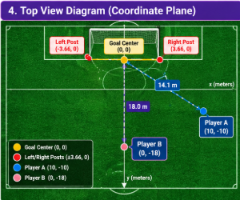

Investigation 2 — Distance vs. Shooting Angle
Now I compare two different situations to answer a more interesting question: Is being closer to the goal always better? In this page, distance means the straight-line distance from the shooter to the center of the goal. It is not the distance between the two players.
Real-world reference — what the shooter sees

This is one of my own photos. I use it only as a real-field reference. The close-wide Player A and farther-centered Player B below are mathematical comparison positions created for the investigation.
Visual 1 — Two players with different situations
Visual 2 — Coordinate idea
Annotated visuals using my own photos

Player B: farther from the goal center (18.0 m), but straight in the middle, so the goal opens more evenly.

Player A: closer to the goal center (14.1 m), but much wider, so the visible opening becomes narrower.

Top view coordinate diagram: this is the cleanest way to see the real comparison. The investigation compares distance from each player to the goal center and then compares the shooting angle to the two goalposts.
Distance rule
What the symbols mean:
- (x₁, y₁) = one point, like the player
- (x₂, y₂) = another point, like the goal center or a goalpost
- d = the straight-line distance between them
Why I need this: a wide player is not straight in front of the goal, so I must measure diagonal distance, not only forward distance.
What I compare
Full calculation work
Player A at (10, −10)
Player B at (0, −18)
What distance am I measuring?
I am not measuring the distance between the two players. I am also not measuring from one player to one post only. I first measure the straight-line distance from each player to the goal center. Then I measure the distances from that player to the left post and right post so I can calculate the shooting angle.
Main conclusion
So being closer does not always mean better. If the player is too wide, the geometry can become worse.
Comparison table
| Player | Position | Actual distance to goal center | Shooting angle | Result |
|---|---|---|---|---|
| A | 10 m forward, 10 m wide | 14.1 m | 21.4° | Closer, but narrow angle |
| B | 18 m forward, centered | 18.0 m | 23.0° | Farther, but better angle |
Finding: Being closer is not always better. A player can be closer to the goal but still have a smaller shooting angle if the position is too wide.